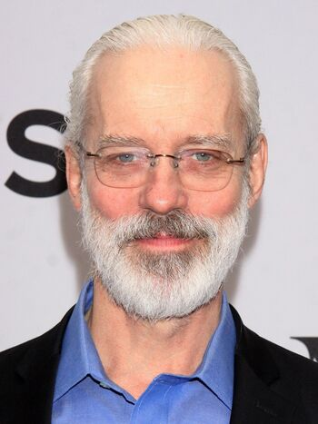

Terrence Mann
Terrence Mann (nacido el 1 de julio de 1951) es un actor, cantante y director de teatro estadounidense. Un destacado actor de teatro en Broadway, Mann tiene extensos créditos tanto en cine como en televisión. En los últimos años, interpretó el papel de Whispers en la serie Sense8. Mann interpreta el papel de Brother Dusk (como Cleon XI y Cleon XII) y Cleon I en Foundation en Apple TV +.
